|

STAR TREK IV:
THE VOYAGE HOME
1986


Sinopse
comentada
Comentrios
Citaes
Efeitos
Especiais
Trilha Sonora
Trivia
Ficha
Tcnica
O
DVD
Meus Amigos,
Estamos
em Casa...
Data Estelar: 8390.0.
A nave estelar Federada Saratoga detecta, na vizinhana da zona neutra,
um gigantesco objeto com a forma de um cilindro circular de cor negra (com
uma espcie de "apndice esfrico submetido a um feixe trator"
em sua "parte inferior") em curso direto para a Terra e emitindo
um enigmtico sinal. Intenes da sonda aliengena? Desconhecidas!
Tentativas de comunicao no so bem sucedidas e o Comando da Frota
Estelar ordena que a Saratoga continue investigando. Enquanto isto, no
conselho da Federao, na Terra, o embaixador Klingon exibe imagens dos
ainda recentes acontecimentos no planeta Genesis que (pelo lado Klingon)
levaram a morte de praticamente toda uma tripulao Klingon (s
sobrevivendo o Klingon Maltz) e a perda (apropriao por parte de Kirk e
cia.) de uma Ave De Rapina. O diplomata parece se esquecer dos atos do
comandante Klingon Kruge que levaram a to lamentvel situao em
primeiro lugar, e insiste que todo o projeto Genesis era simplesmente uma
fachada para o desenvolvimento de uma arma definitiva por parte da Federao.
O embaixador Vulcano Sarek, pai de Spock, adentra o recinto e toma a ateno
do conselho defendendo Kirk e os seus associados. O presidente da Federao
garante a todos os presentes que a questo de m conduta dos principais
oficiais da antiga nave Enterprise ser tratada com a maior severidade e
d mostras claras que no levou muito a srio nada que o representante
Klingon disse, para desespero do mesmo.
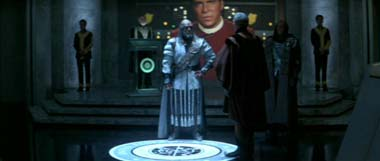
<O cenrio inicial lembra sobremaneira "Jornada nas Estrelas: O Filme", mas felizmente a grande maioria das cenas envolvendo a sonda tem muito pouco a ver com o sucesso (ou fracasso) do presente filme e de fato toda a "ameaa iminente" no tratada de forma to iminente e nem to ameaadora assim (para dizer o mnimo), parecendo mais um elemento plenamente consciente da sua funo para somente a propelir a trama do que algo que possa existir e ter significado por si s.
Nada dito no filme sobre a sonda, sobre quem a enviou e por que diabos tais seres teriam interesse nas baleias em primeiro lugar. No que as especulaes sobre como se deram o incio das comunicaes entre as baleias e tais aliengenas e de como elas evoluram ao longo tempo no sejam engraadas - o autor acha particularmente pitoresca a noo defendida por alguns do "canto subespacial das baleias" (TM) - mas, no fundo, s servem mesmo para realar a total falta de sentido em tal conceito.
A
irresponsabilidade de tais "superseres" em mandar a j infame
sonda com a "Sirene Ligada" (TM) desde a zona neutra (pelo
menos) at a Terra: "Que se dane quem estiver no caminho". no
menos absurda. E "para que?" Ningum se preocupou em explicar.
A opo de ter a sonda viajando, ao menos se
considerarmos o que os efeitos visuais sugerem, em velocidade sub-luz da
Zona Neutra at a Terra em to minsculo intervalo de tempo foi uma pssima
deciso dos envolvidos.
O embaixador Klingon bidimensional como poucos
Klingons e a sua "causa" tem um nico propsito de justificar
a cena de macia exposio que ele protagoniza. A qual inclui uma
formal recapitulao do filme anterior. O assunto diplomtico com os
Klingons no existe antes ou depois desta cena no filme (ficando a dvida
a respeito de que fim levou Maltz, entretanto). Ficamos sem saber
exatamente como os nossos heris conseguiram ficar trs meses em Vulcano
sem serem perturbados pela Frota Estelar. Aparentemente Sarek mexeu
"alguns pauzinhos" e negociou o retorno dos seis (mais o voluntrio
Spock) para o julgamento. Apesar do filme mostrar no se interessar muito
pelo assunto.>
Longe dali, no planeta Vulcano, um espirituoso doutor McCoy "batiza" a ave de rapina Klingon como "HMS Bounty", lembrando uma antiga e famosa histria de um motim na Terra. Kirk e o resto da antiga tripulao snior da NCC-1701 decidem de forma unnime voltar a Terra para enfrentar as conseqncias dos seus atos. J se passaram trs meses desde que eles trouxeram o corpo e o "esprito" do seu amigo Vulcano ao seu planeta natal e Spock parece recuperado, ainda que o meio Vulcano esteja tendo problemas em se acostumar com o seu lado humano. Uma inesperada pergunta do computador ("Como voc se sente?") em meio a um pesado teste computadorizado de conhecimentos multidisciplinares o deixa confuso. Amanda, sua me humana, insiste que sua herana humana parte importante de quem ele , o que s o deixa ainda mais intrigado. Seus amigos (muitos indivduos) arriscaram tudo para traze-lo (um nico indivduo) de volta a vida, o que Spock no consegue explicar em termos puramente lgicos. De toda maneira, Spock est decidido a voltar tambm a Terra para oferecer seu testemunho a respeito do ocorrido em Genesis.
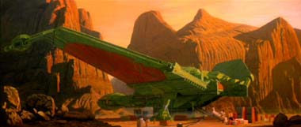
<No tentado nenhum estudo a respeito da experincia pela qual passou Spock, uma esperta deciso que livra o roteiro de trafegar no traioeiro territrio literrio do ps-vida. Fica a necessidade de Spock entrar novamente em contato com seu lado humano e de certa forma com a sua prpria me, que acaba sendo o principal, ainda que discreto arco dramtico do filme.>
Voltando a sonda aliengena, as misteriosas emanaes energticas do objeto deixam todas as naves estelares e instalaes de todos os tipos em seu caminho indefesas, sem energia. A Saratoga se torna a sua primeira vtima. O comando da Frota Estelar comea a temer com o avano do objeto e recebe a mensagem de mais uma nave estelar neutralizada, a Yorktown. De volta a Vulcano, Saavik, que fica no planeta, se despede de Kirk, Spock e cia. A "Bounty" parte rumo a Terra. A sonda finalmente atinge o seu destino, o seu sinal neutraliza todas as instalaes orbitais e as defesas planetrias de forma essencialmente instantnea e os efeitos no param por ai. O sinal comea de alguma maneira a evaporar os oceanos, a cobertura atmosfrica global cresce de forma desesperadora e a Terra perde o contato com o Sol. Com a interferncia da sonda e sem o Sol, a Terra no vai sobreviver muito apenas com as suas reservas planetrias.
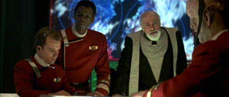
<A comentada deciso a respeito da "aparente velocidade de impulso da sonda" por parte da produo do filme colhe suas duas vtimas, fazendo primeiro a tripulao da Saratoga parecer um bando de incompetentes e em um segundo momento todo o Comando da Frota (que nem sequer esboa um plano de interceptar a sonda antes que ela chegue ao seu destino e permite tolamente que naves estelares fiquem presas no interior das docas com a chegada do intruso). Custava a Saratoga lanar uma sonda e perceber que a "Sirene" do intruso tinha tal efeito sobre as fontes de energia? Aparentemente sim.
Ento, ainda com respeito ao "cilindro": como um sinal de comunicao pode evaporar os oceanos e desativar todas as fontes de energia em seu caminho? E o mais crtico, como a sonda pode no perceber as vidas que est colocando em jogo (uma possvel noo de que ela no reconheceria os seres humanos como conscientes e as baleias sim de rolar no cho de tanto rir) e ento simplesmente sondar os oceanos, verificar a ausncia das baleias e ir embora por si s? (Se no pode, quem foi o doido que colocou este negcio no espao em primeiro lugar?)
Reparem que aparentemente a "sirene" da sonda desativa todas as fontes de energia, exceto aqueles mnimas para deixar as pessoas vivas por um certo perodo de tempo. Sem dvida uma sirene baseada na tecnologia das necessidades do roteiro. engraado tambm como o sinal que a sonda emite aparentemente sempre o mesmo, ou seja, tem-se a impresso que ela veio tentar entrar em contato coma s baleias desde a Zona Neutra. Mais uma cochilada da produo.>
O Presidente da Federao faz um comunicado subespacial aberto para que todos evitem a Terra. A "Bounty" detecta o sinal e Kirk pede para ouvir a transmisso da sonda. Uhura modifica o sinal de forma que ele seja ouvido na ponte da nave exatamente como seria ouvido no fundo do oceano. Spock acha uma combinao de tal som com os cantos das baleias humpbacks, espcie natural da Terra e j extinta. Como possvel simular o som do seu canto, mas no a sua linguagem, Kirk planeja voltar no tempo para obter um espcime vivo e traze-lo para o seu presente, torcendo que ele possa responder a sonda e fazer cessar a ameaa. Kirk est tentando se comunicar com o Quartel General da Frota para comunicar a sua descoberta e buscar algum tipo de confirmao sobre a teoria de Spock, mas a transmisso se mostra de pssima qualidade e o almirante decide seguir com o plano por sua prpria conta.
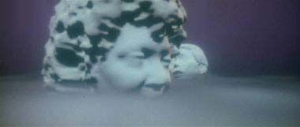
A "Bounty" faz uso do conhecido "efeito estilingue" com o auxlio do Sol e consegue voltar ao ano de 1986 e pousa camuflada no parque Golden Gate em So Francisco. Devido ao esforo envolvido na dobra temporal, os cristais de diltio da ave de rapina comeam a se esfacelar e Scott diz que no seria possvel regenera-los mesmo no sculo XXIII. Spock tem uma teoria de que produtos colaterais de reatores de fisso nuclear (como aqueles usados em porta-avies) possam ser injetados sob certas condies na cmara dos cristais e causar a regenerao dos mesmos.
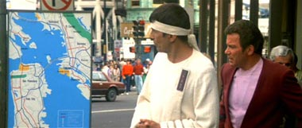
<O comando da Frota no conseguiu nem mesmo organizar parte das suas naves fora do alcance da Sirene da sonda para dar tempo para que as tripulaes delas tivessem a chance de encontrar um plano alternativo para parar o intruso. Parece inevitvel que Kirk e cia. estavam voltando para a Terra neste exato momento e so os nicos com os quais a Federao pode contar.
importante que algum tenha feito objeo ao absurdo do plano de Kirk (e da prpria situao). A montagem que marca a viagem no tempo do tipo quanto menos se falar melhor.
Outro bom ponto foi reconhecer o esforo na manobra da Bounty. A idia que Spock tira literalmente do bolso lembra muito a sua sugesto para regenerar os motores da Enterprise em The Naked Time, episdio pioneiro das viagens no tempo em Jornada. Alm de dar algo a Uhura e Chekov para fazer em seguida.>
Kirk organiza seus homens em trs equipes. Uhura e Chekov vo colher os Ftons do reator de um porta-avies, Sulu, McCoy e Scotty vo providenciar material para a construo do tanque das baleias, enquanto Kirk e Spock (o Vulcano com uma faixa na cabea para esconder as orelhas) vo atrs das prprias baleias (Uhura detectou sons de baleias na cidade e os dois vo investigar). Kirk vende os seus culos (agora com as lentes quebradas, que McCoy lhe deu de presente dois filmes atrs) e distribui o dinheiro pelas trs equipes.
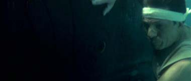
Kirk v em um anncio na lateral de um nibus que indica que existe em cativeiro um casal de baleias humpbacks em um Instituto Oceanogrfico em Sausalito. No que tal viagem seja simples, em primeiro lugar os dois amigos tem que entender o conceito de troco certinho para embarcar em um nibus e Spock acaba usando o seu Toque Vulcano em um passageiro que ouvia Rock bastante alto e acaba sendo aplaudido pelos demais passageiros por causa disto (Spock est tambm intrigado pelo uso de palavres por parte de Kirk desde que eles voltaram para o passado, palavres que o Vulcano chama de: Metforas Coloridas.) Enquanto isto o grupo do tanque entra em contato com a idia de algo chamado Paginas Amarelas e identifica um possvel fornecedor para os materiais do tanque. O grupo dos ftons no to sutil e comea a perguntar no meio da rua onde a base nave de Alameda, onde o sotaque Russo de Chekov parece causar alguma desconfiana dos pedestres, inclusive de um policial.
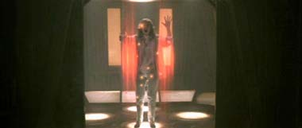
<Ao se entrar no ncleo da histria, praticamente tudo funciona bem e a idia de vender os culos foi um genial ponto de continuidade. Fica somente a dvida se os sensores e principalmente o banco de dados (que muito provavelmente foi substitudo por um repositrio Federado de informaes em Vulcano, pois l se encontram informaes a respeito de uma espcie animal extinta na Terra, trs sculos antes) da Bounty no poderiam ter sido utilizados para aumentar a eficincia das trs misses.>
No Instituto em Sausalito, Spock e Kirk participam de uma tour do lugar com a doutora Gillian Taylor, especialista em baleias. Ela finalmente apresenta o tanque com o casal de baleias (que ela informa que vo ser libertadas em breve, devido aos altos custos de sua manuteno Gillian est muito triste por ter que deixa-las ir) e quando os visitantes descem para observar a vista do interior do tanque atravs das vigias de observao laterais, eis que percebemos que Spock se precipitou e entrou no tanque para fazer um elo mental com as baleias.
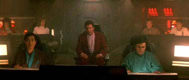
Gillian fica furiosa com a invaso de Spock e com a possibilidade dele ter contaminado o tanque, mas acaba deixando os dois irem embora sem chamar a polcia. Spock diz a Kirk que as baleias toparam o plano. Algum tempo depois, Gillian acaba encontrando com os dois voltando para cidade e lhes d uma carona em sua caminhonete. Kirk se desculpa pelo mau jeito de Spock e pede compreenso para o amigo, dizendo que ele: abusou do consumo de LDS nos seus tempos de Berkeley. A conversa entre os trs at que vai bem at o momento em que Spock diz (acertadamente) que a baleia fmea est grvida, quando Gillian freia o carro exigindo explicaes. Kirk garante que eles no so militares nem malucos e podem ajudar a ela e as suas baleias mais do que ela poderia sequer imaginar. A doutora permanece intrigada pelos dois e os convida para jantar. Spock acaba abrindo mo da gentileza e volta para o parque (obviamente para bordo da Bounty) o que Gillian naturalmente acha muito esquisito.
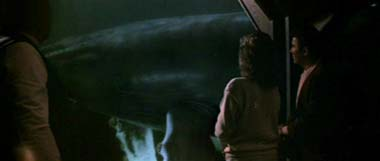
<O fato de Gillian inexplicavelmente pegar leve com Spock e Kirk nunca explicado a contento pelo roteiro, mas muito mais estranho o elo mental que Spock faz com as baleias. O Elo uma maneira de Spock partilhar pensamentos com criaturas conscientes, como a Horta, por exemplo. Nunca em Jornada, Spock foi este Doutor Doolittle Aliengena (TM) que aparece retratado aqui. A no ser que se assuma que estas baleias so um pouco diferentes das baleias de nosso universo, levando em conta diferenas bvias como no caso do Deus Grego Apolo.>
Enquanto isto Uhura e Chekov conseguem chegar a bordo do porta-avies Enterprise para coletar ftons do seu reator. Scotty, se passando por um renomado professor visitante, juntamente com McCoy, consegue trocar, com o dono da empresa Plexicorp, o material necessrio para construir o tanque pela frmula do Alumnio Transparente. Sulu consegue pegar emprestado (isto , roubar e devolver) um helicptero para transportar o material.
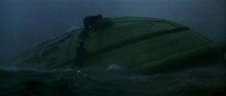
Gillian e Kirk chegam a pizzaria e a doutora diz que vo soltar as baleias no dia seguinte ao meio dia e que elas vo ser embarcada em um 747 e levadas para o Alaska. Elas vo ser marcadas com um transmissor de freqncia conhecida para rastreio. Gillian parece meio que engolir a histria de que Kirk veio do futuro para levar o casal de baleias para recuperar a espcie, mas ainda no d a freqncia do transmissor. Depois ela d uma carona ao almirante at o parque. Scotty est com pouca energia para o transporte, ele traz Uhura a bordo com o receptculo dos ftons, mas demora muito e Chekov preso, interrogado e sofre um acidente grave ao tentar escapar.
<Foi um belo toque o nome do porta-avies ser Enterprise. A reao de Scotty a pergunta de McCoy sobre a idia de trocar a frmula do composto do futuro (Quem garante que no foi ele quem inventou? Diz o Engenheiro) define perfeitamente a atitude geral do filme a respeito dos paradoxos temporais. Os detalhes do emprstimo do helicptero fazem falta em tela. A briga de Scotty com um antigo computador Apple no envelheceu muito bem. Gillian provavelmente aceita a conversa de Kirk pelo amor que ela tem pelos animais e a certeza de que as baleias sero uma presa fcil para os baleeiros quando libertadas, o almirante trouxe aquela luz no final do tnel, por mais absurda que fosse, que ela tanto precisava na falta de qualquer outra opo. Atitudes rasas para um personagem verdade.>
De manh Gillian vai trabalhar e d de cara com o tanque vazio e a notcia que as baleias foram despachadas sem que ela soubesse de madrugada. Ela vai ao parque e d uma trombada na Bounty camuflada. Kirk a transporta a bordo. Ela diz o que aconteceu, mas apesar do plano de Kirk estar funcionando, ele decide no partir ainda por que Chekov est em um hospital local em estado grave. Spock diz que no a coisa lgica a fazer, mas a coisa humana a ser feita. Gillian, Kirk e McCoy partem ao resgate de Pavel.
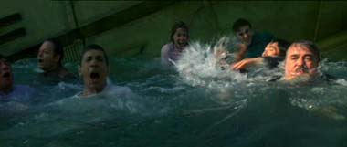
O trio chega ao hospital correto e McCoy fica um pouco chocado ao ver dois residentes de Medicina debatendo um caso, ele acha que os mtodos apresentados por ambos so dignos da santa inquisio. Eles fingem que Gillian uma paciente a caminho de uma operao delicada e entram na sala do centro cirrgico onde esta Chekov onde prendem toda a equipe e McCoy cura o Russo. Os quatro fogem da segurana do hospital at um elevador quando so transportados em segurana para o parque. Gillian fornece a freqncia do transmissor das baleias a Kirk, mas no quer ficar para trs se agarrando no almirante e sendo transportada com ele a bordo. A Bounty localiza as baleias, as salva de um barco baleeiro e as transporta confortavelmente a bordo. Usando de novo o Efeito Estilingue e apesar de toda a trepidao, a Bounty est novamente de volta ao futuro.
<O resgate do hospital de Chekov at bastante efetivo em termos cmicos, mas parece distanciado ao extremo do que se espera tipicamente de Jornada. Alm da obviedade do cenrio diferenciado e de uma msica ainda mais atpica, temos detalhes como uma infame Plula que faz crescer um rim que mais parece coisa sada de um episdio dos Jetsons, alm de um curioso dispositivo capaz de realizar cirurgias cerebrais no invasivas, aparentemente por que McCoy assim o deseja. O fato de a doutora jogar tudo para o alto para embarcar com Kirk e cia. s enfatiza a superficialidade da sua personagem.>
Sob a perspectiva do pessoal da Frota no se passou tempo algum entre a mensagem inicial de Kirk e a volta da nave dele. Nossos heris caem perto da ponte e Kirk tem que arriscar a vida para libertar as baleias. Todos saem da nave se agarrando a mesma enquanto ela no afunda esperando as baleias responderem ao sinal da sonda. Elas finalmente o fazem, a sonda responde se desarma e medida que vai se afastando da Terra todos os efeitos da sua Sirene vo sendo revertidos. Um transporte vem buscar os oito nufragos da Bounty.
<Uma dos momentos de maior humor involuntrio do filme se d quando Sarek consegue enxergar a Bounty a olho nu (atravs de uma janela que se quebra) em meio tempestade. Felizmente no foram colocadas legendas na conversa das baleias com a sonda. Baleias Hortas ou no, tais dilogos seriam temerrios de serem escritos e apresentados. fascinante como aparentemente no temos baixas, apesar da uniforme e global falta de energia, e tambm como as coisas voltam ao normal como em um passe de mgica com a retirada do intruso.>
Em uma cerimnia no Conselho da Federao, em virtude da antiga tripulao da Enterprise ter salvado a Terra da destruio mais uma vez, todas as acusaes contra Kirk e cia. so retiradas exceto uma direcionada somente a Kirk: Desobedecer a ordens de um superior hierrquico. Kirk ento rebaixado a capito como punio e receber o comando de uma nave estelar com a tripulao de sua escolha. Gillian diz a Kirk que j est instalada e pronta para embarcar em uma nave cientfica. Spock e Sarek se encontram e o pai de Spock diz a seu filho que os companheiros dele (e ele prprio) so de fato muito valorosos e que ele estava errado em ser contra o ingresso de Spock na Academia da Frota Estelar em primeiro lugar. Spock pede que Sarek diga a sua me que Se sente bem. Seu pai no entende o que ele quer dizer, mas acena positivamente e parte.
<Tal desenvolvimento vai direo do sincronismo de acontecimentos e convenincia para restaurar o Status Quo a todo preo, o que mostra a coerncia do roteiro em abrir conscientemente mo de uma maior peso dramtico de forma at a no convidar um maior escrutnio a respeito dos acontecimentos vistos em tela. O personagem da doutora Taylor termina extremamente mal resolvido indo para o espao enquanto as suas baleias acabam ficando na Terra, lidando com aliengenas como se estivesse em uma conveno de fs fantasiados e de uma forma geral agindo como a trama necessitava que ela agisse para realizao da misso de Kirk e dos demais. Por outro lado resoluo do antigo conflito entre Spock e o seu pai, algo introduzida para a audincia em Journey To Babel, fecha com chave de ouro o pequeno arco de Spock na recuperao de sua humanidade durante o filme.>
Um transporte leva os nossos sete velhos conhecidos no interior da doca espacial para o seu novo comando, uma nave tambm da classe Constitution de nome USS Enterprise e prefixo NCC-1701-A Kirk menciona se sentir de volta ao lar e a tripulao parte em um cruzeiro de testes.
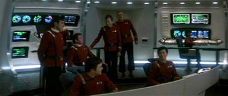
<A cena final
um tanto deslocado do restante do filme. Terminar com a viso externa
da nave auxiliar com a tripulao chegando a o seu novo lar seria
muito mais satisfatria. Quem da produo ter achado imprescindvel
uma cena na ponte da Enterprise?>